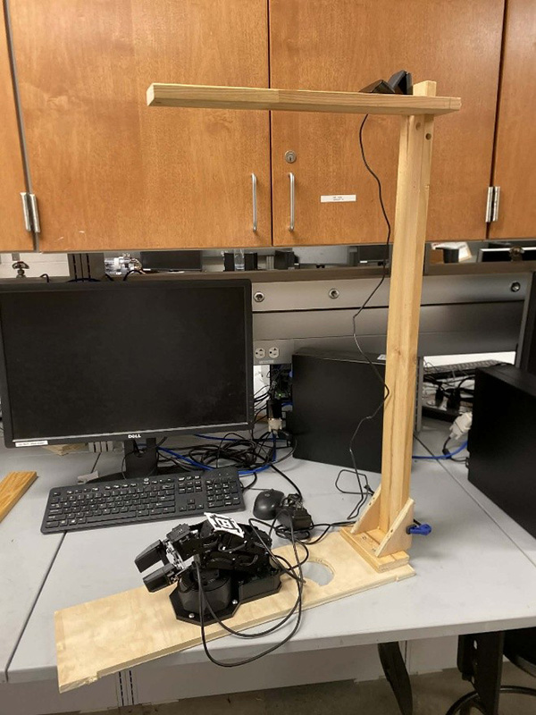
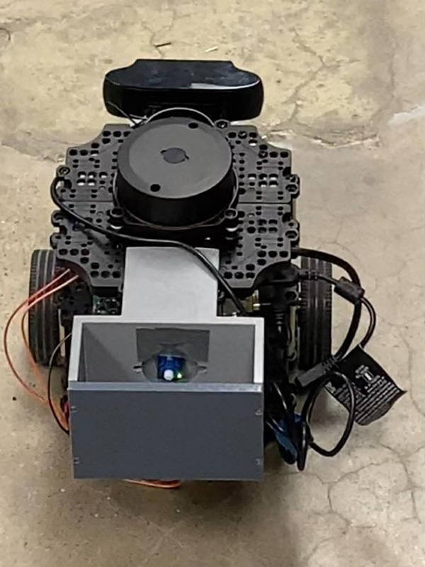

Robotics Project
Project Timeline: Fall 2025
Overview
Developed a ROS2 system to coordinate payload handoff between a PincherX-100 robotic arm and
Turtlebot3 mobile robot. This project demonstrates integration of multiple robotic platforms
and coordination of complex autonomous behaviors.

PincherX-100 Robotic Arm

Turtlebot3 Mobile Robot
Project Components
- PincherX-100 Robotic Arm: 4-DOF manipulator for precise payload handling
- Turtlebot3: Mobile robot platform for autonomous navigation
- ROS2 Framework: Robot Operating System for inter-robot communication
- Coordination System: Custom software for synchronized handoff operations
Key Features
- Autonomous payload detection and grasping
- Coordinated motion planning between arm and mobile base
- Real-time communication using ROS2 topics and services
- Collision avoidance and safety monitoring
- Precise positioning for successful payload transfer
Technologies Used
- ROS2 (Robot Operating System 2)
- Python for robot control and coordination
- Computer vision for object detection
- Path planning algorithms
- Kinematics and inverse kinematics
Challenges & Solutions
- Synchronization: Implemented state machine to coordinate timing between robots
- Positioning Accuracy: Used sensor feedback and calibration for precise alignment
- Communication Latency: Optimized ROS2 message passing for real-time performance